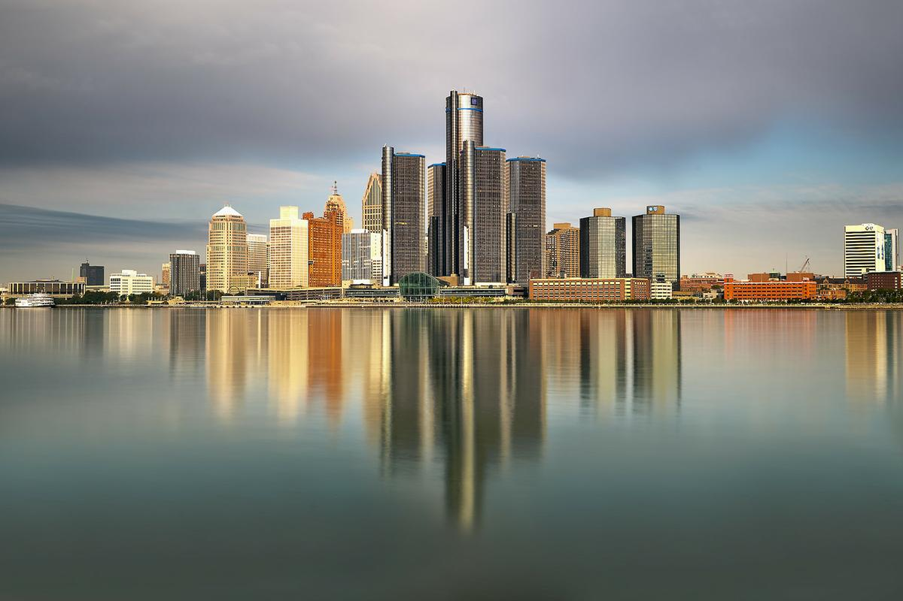
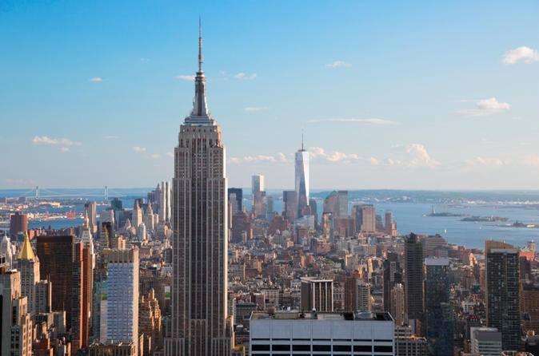
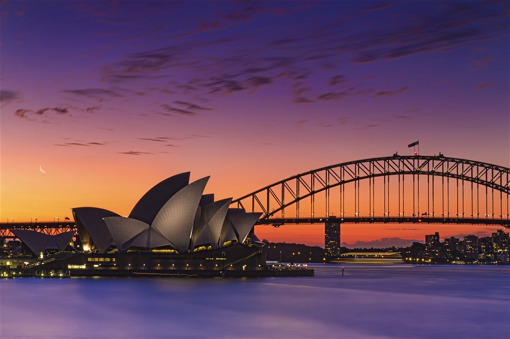

Welcome to the Air Ticket Reservation System!
Reserve Tickets
Destinations
Bangkok, Thailand
Bangkok, Thailand’s capital, is a large city known for ornate shrines and vibrant street life. The boat-filled Chao Phraya River feeds its network of canals, flowing past the Rattanakosin royal district, home to opulent Grand Palace and its sacred Wat Phra Kaew Temple. Nearby is Wat Pho Temple with an enormous reclining Buddha and, on the opposite shore, Wat Arun Temple with its steep steps and Khmer-style spire.
Detroit, MI, USA
Detroit is the largest city in the midwestern state of Michigan. Near Downtown, the neoclassical Detroit
Institute of Arts is famed for the Detroit Industry Murals painted by Diego Rivera, and inspired by the city’s
ties to the auto industry, giving it the nickname "Motor City." Detroit is also the birthplace of Motown Records,
whose chart-topping history is on display at their original headquarters, Hitsville U.S.A.

Seoul, Korea
Seoul, the capital of South Korea, is a huge metropolis where modern skyscrapers, high-tech subways and pop culture meet Buddhist temples, palaces and street markets. Notable attractions include futuristic Dongdaemun Design Plaza, a convention hall with curving architecture and a rooftop park; Gyeongbokgung Palace, which once had more than 7,000 rooms; and Jogyesa Temple, site of ancient locust and pine trees.
New York, NY, USA
New York City comprises 5 boroughs sitting where the Hudson River meets the Atlantic Ocean.
At its core is Manhattan, a densely populated borough that’s among the world’s major commercial,
financial and cultural centers. Its iconic sites include skyscrapers such as the Empire State Building
and sprawling Central Park. Broadway theater is staged in neon-lit Times Square.

Tokyo, Japan
Tokyo, Japan’s busy capital, mixes the ultramodern and the traditional, from neon-lit skyscrapers
to historic temples. The opulent Meiji Shinto Shrine is known for its towering gate and surrounding woods.
The Imperial Palace sits amid large public gardens. The city's many museums offer exhibits ranging from
classical art (in the Tokyo National Museum) to a reconstructed kabuki theater (in the Edo-Tokyo Museum).

Singapore, Singapore
Singapore, an island city-state off southern Malaysia, is a global financial center with a tropical
climate and multicultural population. Its colonial core centers on the Padang, a cricket field since the
1830s and now flanked by grand buildings such as City Hall, with its 18 Corinthian columns. In
Singapore's circa-1820 Chinatown stands the red-and-gold Buddha Tooth Relic Temple, said to house
one of Buddha's teeth.
Sydney, NSW, Australia
Sydney, capital of New South Wales and one of Australia's largest cities, is
best known for its harbourfront Sydney Opera House, with a distinctive sail-like design.
Massive Darling Harbour and the smaller Circular Quay port are hubs of waterside life,
with the arched Harbour Bridge and esteemed Royal Botanic Garden nearby. Sydney Tower’s
outdoor platform, the Skywalk, offers 360-degree views of the city and suburbs.
